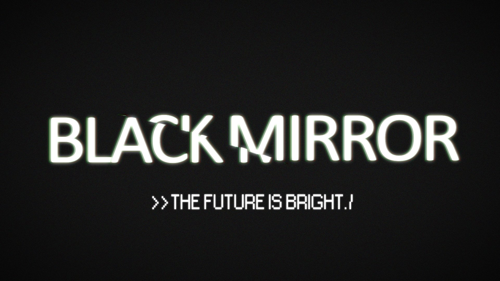
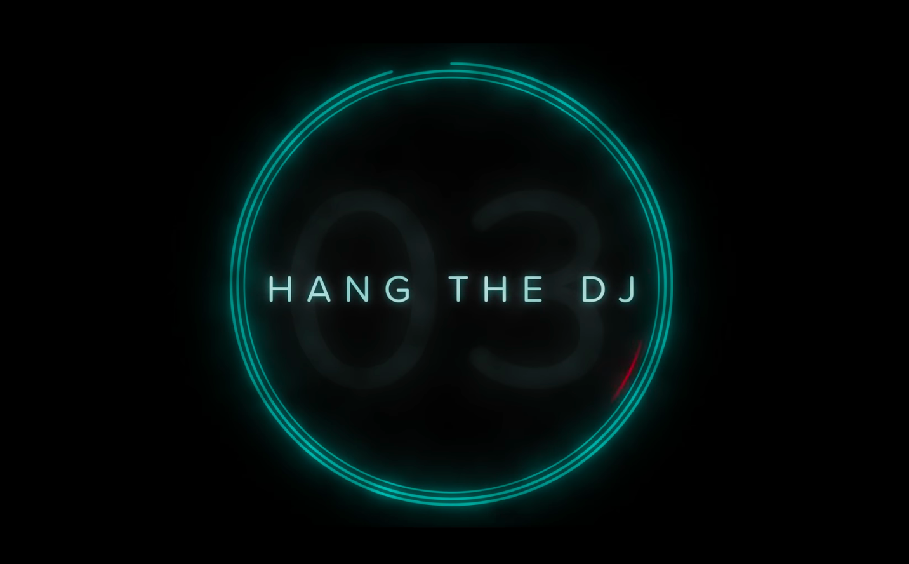
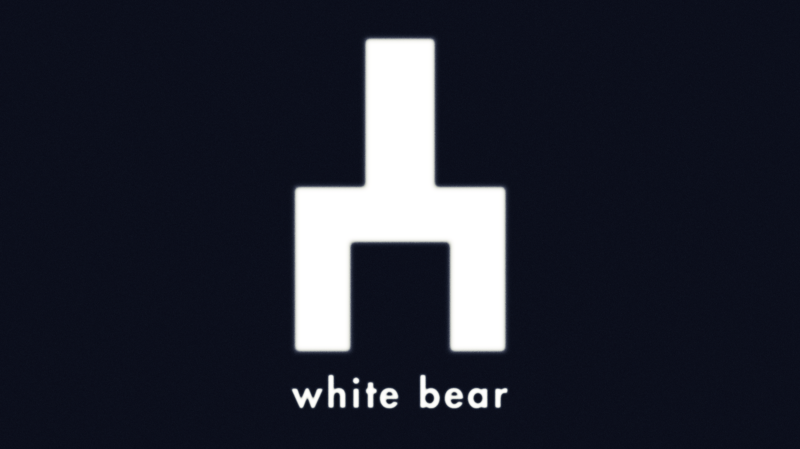
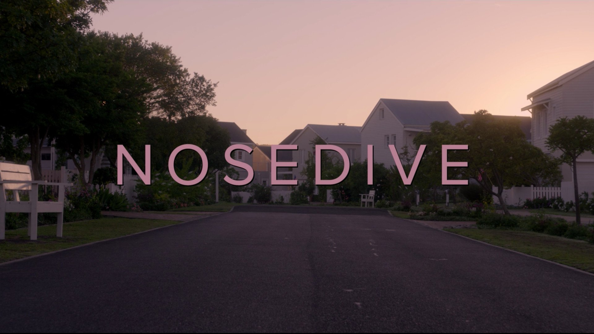
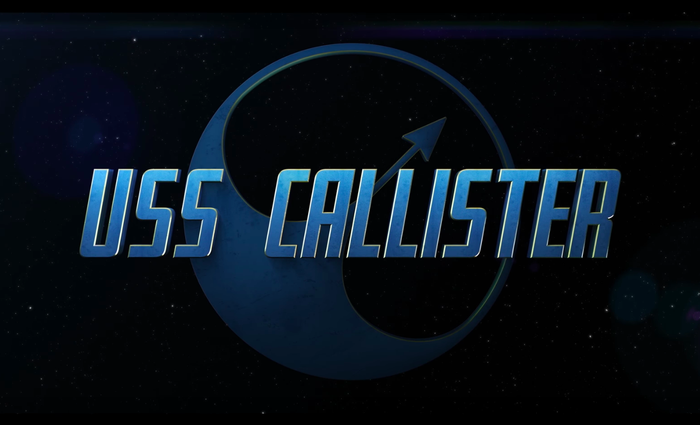

BLACK MIRROR_
IS A BRITISH science fiction anthology television series created by Charlie Brooker, with Brooker and Annabel Jones serving as the programme showrunners. It examines modern society, particularly with regard to the unanticipated consequences of new technologies. Episodes are standalone, usually set in an alternative present or the near future, often with a dark and satirical tone, though some are more experimental and lighter.
The show premiered for two series on the British television channel Channel 4 on December 2011 and February 2013, respectively. After its addition to the catalogue in December 2014, Netflix purchased the programme in September 2015. It commissioned a series of 12 episodes later divided into the third and fourth series, each six episodes; the former was released on 21 October 2016 and the latter on 29 December 2017.




